Главная
Возможные неисправности
Регламентные работы
Справочная информация
Добро пожаловать на портал поддержки IT-компании

Наш сайт предназначен для специалистов и пользователей, работающих с проектами в сфере разработки программного обеспечения. Здесь вы найдете все необходимые инструменты и информацию для эффективного управления регламентными работами, диагностики и устранения неисправностей, а также доступ к справочным материалам.
Основные функции портала:
- Рекомендации по проведению регламентных работ – плановые действия для поддержания стабильности и безопасности систем.
- Диагностика неисправностей – интерактивный диалог, который поможет выявить и устранить возможные проблемы.
- Справочная информация – база знаний, содержащая технические данные, инструкции и полезные советы.
Наш портал создан для того, чтобы минимизировать простои, оптимизировать процессы
сопровождения
ПО и сделать работу с проектами максимально удобной и продуктивной.
Если у вас возникли вопросы или проблемы – начните с диагностики или ознакомьтесь с
регламентными рекомендациями!
Возможные неисправности
В этом разделе представлены наиболее распространенные проблемы, с которыми могут столкнуться пользователи при работе с проектами в сфере разработки программного обеспечения. Наш инструмент диагностики поможет вам быстро определить причину неисправности и предложит рекомендации по её устранению.
💡Выберите интересуюущую неисправность
Система не позволяет создать новый проект
Задачи не отображаются в списке задач проекта
Ошибка при генерации отчета
Ошибка при входе в систему
❗Примечание
Если ваша проблема не решена с помощью диагностики, вы можете обратиться в службу поддержки или ознакомиться с Справочной информацией. Мы сделаем всё, чтобы помочь вам как можно быстрее!
К списку проблем
Регламентные работы

Данный раздел предназначен для описания стандартных процедур и задач, которые необходимо выполнять в рамках проекта для обеспечения его стабильной работы и достижения поставленных целей.
Основные сроки проведения регламентных работ
| Название регламентной работы | Периодичность |
|---|---|
| Назначение задач команде | 1 раз в неделю |
| Отслеживание прогресса выполнения задач | 1 раз в неделю |
| Генерация отчета о статусе проекта | 1 раз в месяц |
| Создание новых проектов | По мере необходимости |
Назначение задач команде
- Открытие страницы задач
- Перейдите в раздел "Управление проектами" → выберите нужный проект
- Откройте вкладку "Задачи"
- Убедитесь, что у вас есть права на создание новых задач (роль "Менеджер" или "Руководитель") 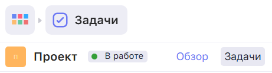
- Выбор участников команды
- В разделе "Участники" выберите ответственных исполнителей
- Учитывайте текущую загрузку участников (можно проверить в календаре ресурсов) 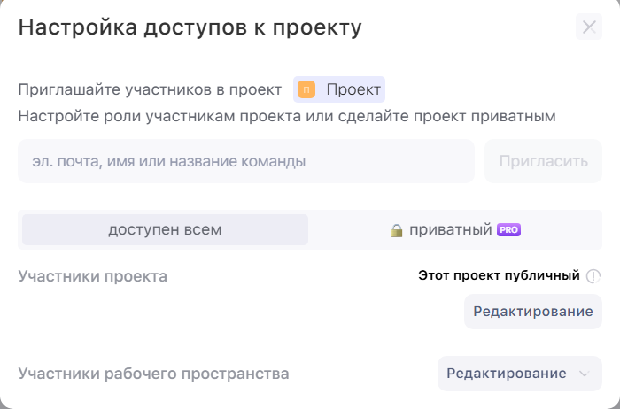
- Формулировка задачи
- Название (должно быть конкретным и информативным)
- Описание (четко сформулируйте цель задачи) 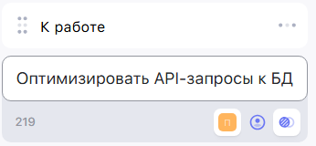
- Установка сроков
- Дата начала (если отличается от текущей)
- Дедлайн (с учетом буфера на непредвиденные обстоятельства) 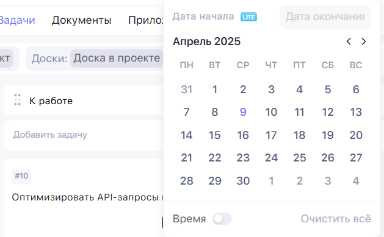
- Сохранение
- Нажмите "Создать задачу"
- Убедитесь, что задача появилась в общем списке
Отслеживание прогресса выполнения задач
- Открытие страницы задач
- Перейдите в раздел "Управление проектами" → выберите нужный проект
- Откройте вкладку "Задачи"
- Проверка статуса выполнения задач. Обратите внимание на:
- Сроки выполнения (нет ли просроченных задач)
- Прогресс (% выполнения, если отображается)
- Обновление информации (при необходимости)
- Откорректируйте статус задачи (если задача выполнена - "Готово"; если задача застопорилась - "На паузе")
- Обновите сроки (если необходимо) 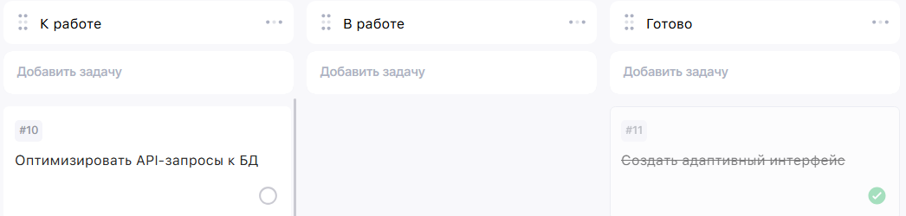
Генерация отчета о статусе проекта
- Открытие страницы документов
- В главном меню найдите раздел «Документы» 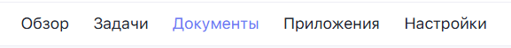
- Выбор проекта и типа документа
- Выберите нужный проект из выпадающего списка
- Выберите тип документа ("Отчет о прогрессе") 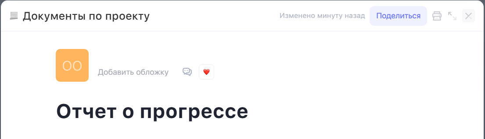
- Генерация и сохранение отчета
- Нажмите кнопку «Сгенерировать документ»
- Нажмите «Экспорт» и выберите нужный формат ("PDF" или "Excel") 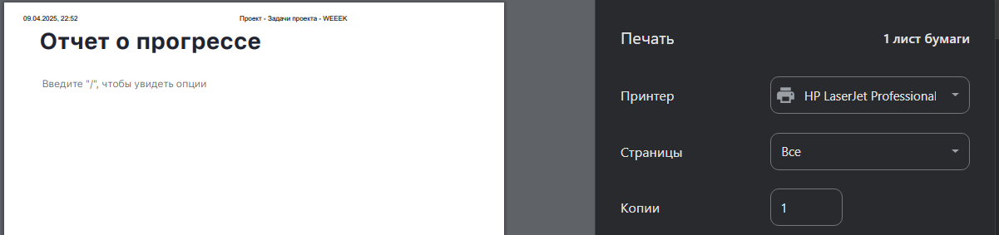
Создание новых проектов
- Вход в систему
- Авторизируйтесь в системе под своим логином и паролем
- Убедитесь, что ваша роль позволяет создавать проекты (доступно для менеджеров).
- Открытие раздела создания проекта
- В главном меню найдите раздел: «Проекты» → «Создать новый проект»
- Выбор тип проекта ("Разработка ПО", "Пустой проект" и т.д.) 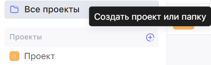
- Заполнение данных о проекте
- Введите основную информацию (название проекта, описание, сроки)
- Дополнительно настройте проект (укажите участников данного проекта) 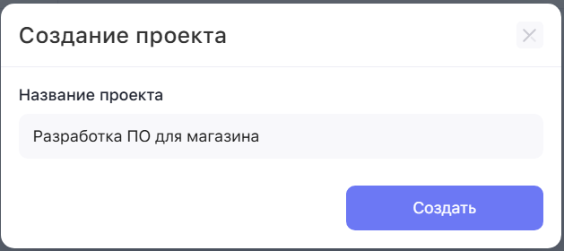
- Сохранение проекта
- Убедитесь, что все поля заполнены корректно
- Нажмите кнопку «Сохранить»
- Дождитесь уведомления «Проект успешно создан» 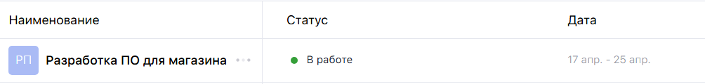
Справочная информация

Раздел предоставляет ключевые данные и ресурсы, необходимые для успешного выполнения проекта. В этом разделе будет собрана информация о методах, инструментах и подходах, которые могут быть полезны команде на различных этапах работы.
Описание системы управления проектами
Название системы: DevFlow
Назначение:
DevFlow — это веб-приложение для управления IT-проектами, предназначенное для команд
разработчиков, менеджеров и заказчиков. Система помогает эффективно планировать,
контролировать и анализировать выполнение задач на всех этапах жизненного цикла проекта.
Ключевые возможности
- Управление задачами
- Создание, назначение и приоритезация задач
- Добавление статусов проектам ("Готово", "В разработке", "На паузе")
- Отслеживание прогресса
- Календарное планирование
- Визуализация прогресса через графики
- Генерация отчетов о выполнении
Технологии
- Frontend: React.js + TypeScript
- Backend: Node.js (Nest.js)
- База данных: MySQL
- Хостинг: AWS/GitHub Pages
Для кого это?
- Разработчики: Удобное отслеживание своих задач
- Менеджеры: Контроль сроков и ресурсов
- Заказчики: Прозрачность процесса через гостевой доступ
Часто задаваемые вопросы (FAQ)
Какие браузеры поддерживаются?
ИЭТР работает в современных браузерах:
- Google Chrome (последние 3 версии)
- Mozilla Firefox (последние 3 версии)
- Microsoft Edge (Chromium)
- Safari (для macOS/iOS)
Как использовать диагностический чат-бот?
- Перейдите в раздел Возможные неисправности
- Выберите проблему (например, "Ошибка при генерации отчета")
- Отвечайте на вопросы бота (Да/Нет/Назад)
- Следуйте предложенным инструкциям
Как найти инструкцию для регламентной работы?
- Откройте раздел Регламентые работы
- Выберите нужную процедуру (например, "Генерация отчетов")
- Следуйте инструкции
Почему не отображаются изображения/видео?
- Проверьте подключение к интернету
- Отключите блокировщики рекламы (например, AdBlock)
- Обновите браузер до последней версии
Что делать, если я не нашел ответа в FAQ?
Отправьте запрос в поддержку через пункт Контактная информация
Контактная информация
Раздел "Контактная информация" в ИЭТР предназначен для оперативной связи пользователей с технической поддержкой, ответственными специалистами и другими службами IT-компании.
Техническая поддержка:
 Email: andrewop66@mail.ru
Email: andrewop66@mail.ru
 Telegram: @z1rex0 (пн-пт, 10:00-22:00)
Telegram: @z1rex0 (пн-пт, 10:00-22:00)